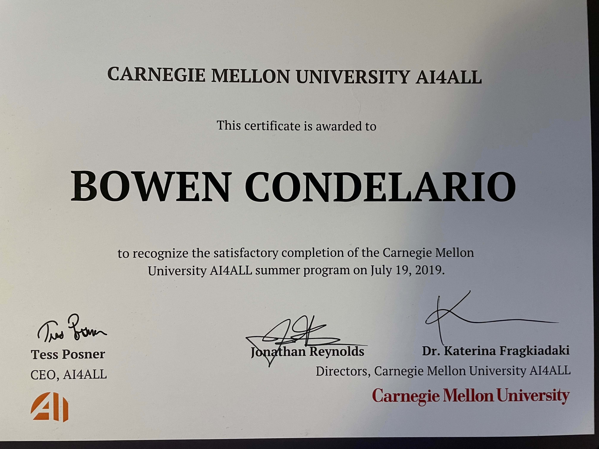

page 1
page 2
My Schooling
During the end of my freshman year of high school my school came out with a class called app development and it caught my eye but the requirements to join the class was to complete computer science 1 which was a semester long and taught the basic theory of computer science through scratch then computer science 2 which was also a semester long which had us learn python and other computer science theory, these both filled up my schedule for my sophomore year. During my junior year I had two classes, AP computer science where we learned about the internet and binary information streams and app development where I learned Javascript through Xcode and Swift to make basic apps for Apple products. finally duing my senior year of high school I asked my principal if we could make a app development 2 class and she happily agreed, it was a class that only had me and my friend so it became a self study class based around Xcode and Swift and me and my friend became assistant teachers in different computer science classes, we went off on our own building the apps we wanted to make, the other class i had that year was Cyber Security where i learned about all types of things like how information packets travel and how to use multiple types of encryption and different languages like more Javascript, Sql, and the Linux command line. All of these years of people teaching me how the world of computers work just made my desire to go into computer science even more intense.
Carnegie Mellon
At the end of my sophomore year I was given the opportunity to apply for a grant from Microsoft to go to Carnegie Mellon University to study Artificial Intelligence for three weeks and for free!, I was amazed and just barely met the requirements to go so I sent in my application along with a couple paragraphs about myself and a couple projects I had worked on. I convinced my parents that I had a good chance of getting in because of my talent for coding but they where highly doubtful and even now they are doubtful I will get into Array but I keep pushing and hopping, then one fateful morning I got an email from the Director of AI4ALL saying congratulations you have been selected to participate in the AI4ALL program, I was ecstatic and told my parents to their surprise. Going to Carnegie Mellon was the best time of my life and I was one of 7 students from all around the world who got the Microsoft grant and I got to meet so many new and intelligent people and I will never forget it. While going to school there I can say for certain that the AI I made was the project I am most proud of, I made a tree AI that took all the characteristics of a building like its location, electrical, plumbing, and anchorage to produce an accurate appraisal on the house or building. This experience has been the best chapter of my life so far and I hope Array to be the next.
